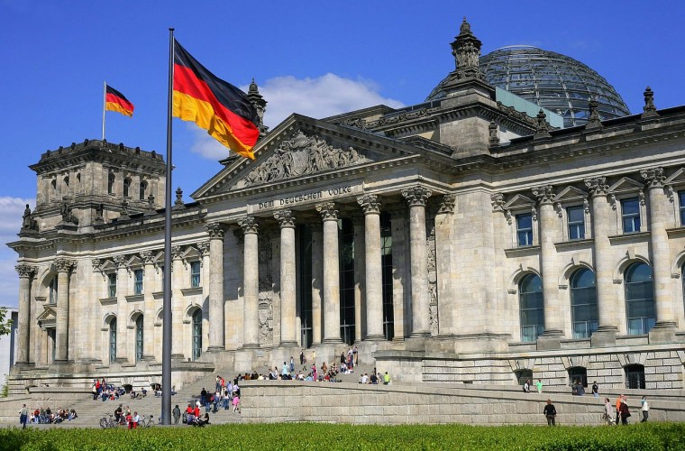
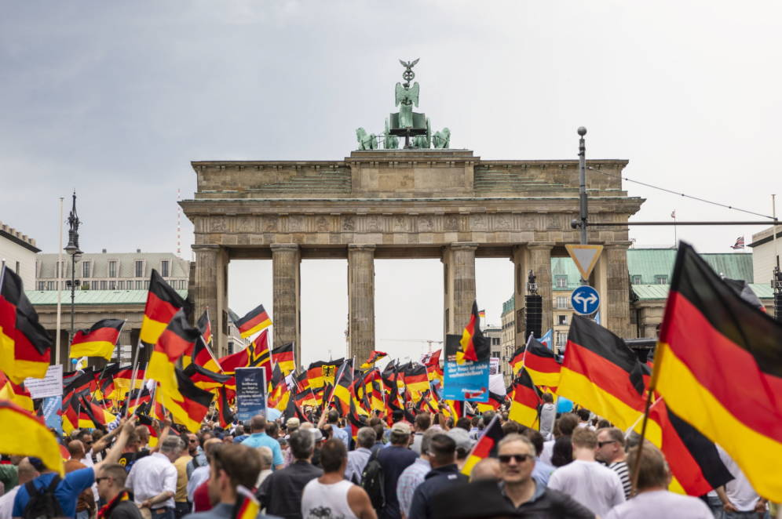
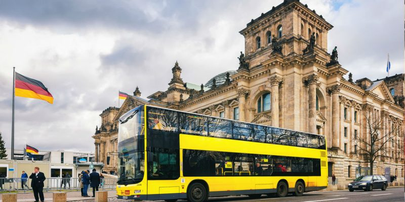

Mapa
Alemania
Las palabras «alemán» y «Alemania» provienen del latín y eran utilizadas en la antigüedad por los romanos para denominar a los alamanes —no es lo mismo que alemanes—, el pueblo germánico más cercano al territorio del Imperio romano. De ahí fue usada para nombrar al país entero.8 Además de alemán, está también extendido el uso del gentilicio germano, derivado del nombre con que los romanos se referían a las tribus ni romanas ni celtas de la zona central de Europa, cuyo territorio llamaban Germania.8 Desde el siglo X, los territorios alemanes formaron una parte central del Sacro Imperio Romano Germánico que duró hasta 1806. Durante el siglo XVI, las regiones del norte del país se convirtieron en el centro de la Reforma Protestante.

Como un moderno Estado nación, el país fue unificado en tiempos de la guerra franco-prusiana en 1871. Tras la Segunda Guerra Mundial, cuando la Alemania nazi fue derrotada por los aliados, Alemania fue dividida en dos Estados separados a lo largo de las líneas de ocupación aliadas en 1949; los Estados resultantes fueron la República Federal de Alemania y la República Democrática Alemana, que se reunificaron en 1990. Fue miembro fundador de la Comunidad Europea (1957), que se convirtió en la Unión Europea en 1993. Es parte de la zona Schengen y adoptó la moneda común europea, el euro, en 1999.

Alemania es miembro de la Organización de las Naciones Unidas, la OTAN, el G7, las naciones G4, y firmó el Protocolo de Kioto. Es la cuarta mayor economía mundial en cuanto al PIB nominal, la primera de Europa, y fue el mayor exportador de mercancías del mundo en 2007. En términos absolutos, asigna el tercer mayor presupuesto anual de la ayuda al desarrollo en el mundo,9 mientras que sus gastos militares ocuparon el noveno lugar mundial en 2012.10 El país ha desarrollado un alto nivel de vida y establecido un sistema completo de seguridad social. Tiene una posición clave en los asuntos europeos y mantiene una estrecha relación con varias asociaciones a nivel mundial.11 Es reconocida como líder en los sectores científico y tecnológico.12 Alemania es el país más contaminante de Europa.
